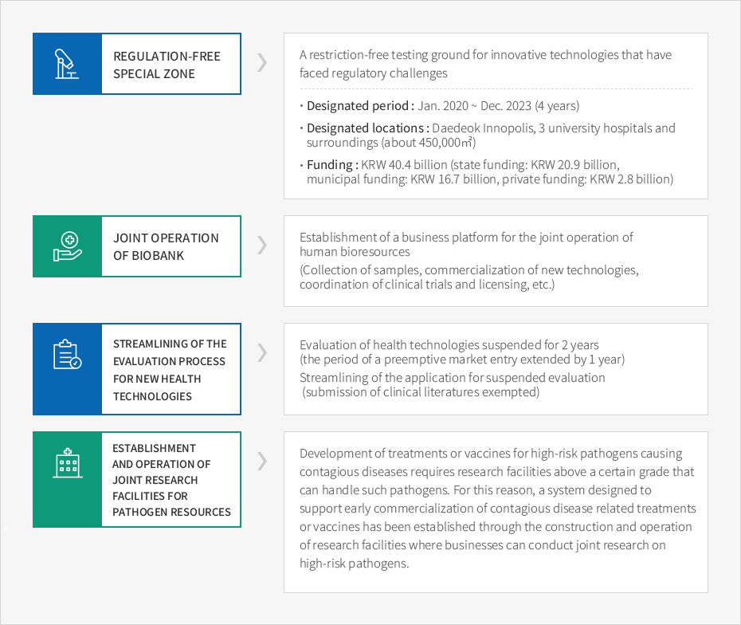
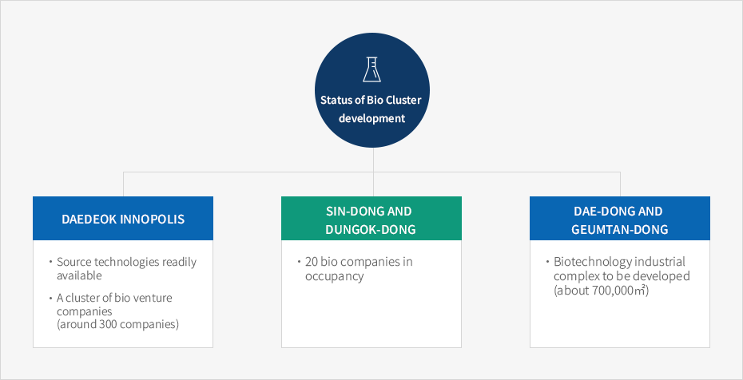

Medi-Bio Industries
- Home
- Major Industries
- Medi-Bio Industries
Daejeon, the Best Location for Bio Industry
Selected as a regulation-free special zone in the biomedical field


- Regulation-Free Special Zone - A restriction-free testing ground for innovative technologies that have faced regulatory challenges
- Designated period : Jan. 2020 ~ Dec. 2023 (4 years)
- Designated locations : Daedeok Innopolis, 3 university hospitals and surroundings (about 450,000㎡)
- Funding : KRW 40.4 billion (state funding: KRW 20.9 billion, municipal funding: KRW 16.7 billion, private funding: KRW 2.8 billion)
- [Joint operation of biobank] - Establishment of a business platform for the joint operation of human bioresources (Collection of samples, commercialization of new technologies, coordination of clinical trials and licensing, etc.)
- [Streamlining of the evaluation process for new health technologies] - Evaluation of health technologies suspended for 2 years (the period of a preemptive market entry extended by 1 year), Streamlining of the application for suspended evaluation (submission of clinical literatures exempted)
- [Establishment and operation of joint research facilities for pathogen resources] - Development of treatments or vaccines for high-risk pathogens causing contagious diseases requires research facilities above a certain grade that can handle such pathogens. For this reason, a system designed to support early commercialization of contagious disease related treatments or vaccines has been established through the construction and operation of research facilities where businesses can conduct joint research on high-risk pathogens.

Development of Bio Cluster

Status of Bio Cluster development
- Daedeok Innopolis
- Source technologies readily available
- A cluster of bio venture companies (around 300 companies)
- Sin-dong and Dungok-dong
- 20 bio companies in occupancy
- Dae-dong and Geumtan-dong
- Biotechnology industrial complex to be developed (about 700,000㎡)